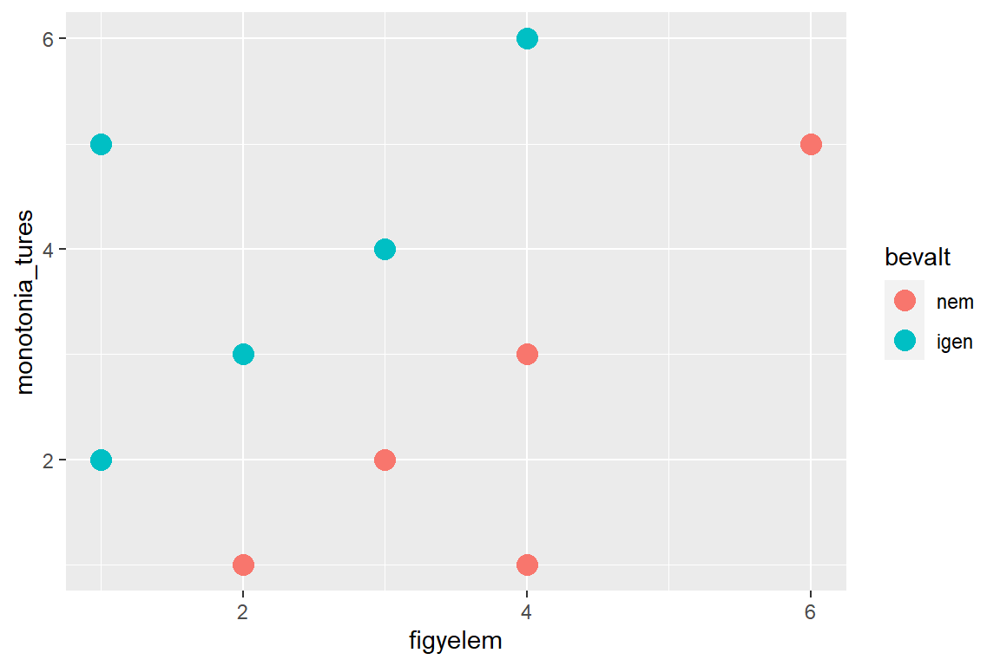

szalagmunka <- rio::import(file = "adat/diszkriminancia_alkalmassag.xlsx")
szalagmunka$bevalt <- factor(szalagmunka$bevalt, labels = c("nem", "igen"))
szalagmunka
#> bevalt figyelem monotonia_tures
#> 1 igen 1 2
#> 2 igen 1 5
#> 3 nem 2 1
#> 4 igen 2 3
#> 5 nem 3 2
#> 6 igen 3 4
#> 7 nem 4 3
#> 8 nem 4 1
#> 9 igen 4 6
#> 10 nem 6 58 Diszkriminancia elemzés
A diszkriminancia analízisben azt a problémát járjuk körül, hogyan lehet az emberek egyes csoportjait valamilyen vizsgált jellemzők alapján szétválasztani, az egyes csoportokat azonosítani, valamint a csoporttagságokat az előbb említett vizsgált jellemzők alapján előrejelezni.
Képzeljünk el, hogy szalagmunkásokkal végeznek alkalmasság-vizsgálatot. A szalagmunka általában sok figyelmet igényel, ugyanakkor meglehetősen monoton munka, éppen ezért jó figyelmi képességek és monotónia tűrés szükséges hozzá. A lenti szalagmunka adatmátrix 10 személy adatát tartalmazza.
A fenti adatok egy részét a szalagmunkára való jelentkezéskor gyűjtötték:
figyelem: figyelmi képességükre ésmonotonia_tures: monotónia-tűrésükre vonatkozó információk.
Mindkét változót 7 fokú skálán értékeltek (ahol a magasabb érték jobb képességeket jelent), valamint azt az információt is láthatjuk, hogy később beváltak-e vagy sem (bevalt).
Azt kellene megmutatnunk, hogy a figyelem és a monotónia-tűrés pontszámai alapján valóban lehet következtetést levonni a személy beválását illetően. Ha ezt sikerül egy objektív statisztikai módszerrel is igazolnunk, akkor az ezt követően szalagmunkára jelentkezőket figyelem és monotónia tűréssel vizsgálva tesztelhetjük, és egész jól ki lehet válogatni az alkalmasabb jelölteket.
Ha pontdiagramon ábrázoljuk az adatokat, és színezéssel jelöljük a beválást, akkor a két csoport szemmel láthatóan szétválik egymástól, ám sem a függőleges, sem a vízszintes tengely mentén nem lehet elkülöníteni a csoportokat.
library(ggplot2)
ggplot(szalagmunka, aes(x = figyelem, y = monotonia_tures, colour = bevalt)) +
geom_point(size = 4)
A diszkriminancia elemzés sajátossága, hogy a csoportokat a magyarázó változók együttes figyelembevételével tudja szétválasztani. Ennek megfelelően ha önmagában tekintjük az egyik (például figyelem) vagy másik (monotonia_tures) magyarázó változókat, akkor nem tudunk szignifikáns különbséget kimutatni a bevalt változó két csoportjában \((p = 0,108; p=0,159)\).
t.test(figyelem ~ bevalt, data = szalagmunka)$p.value
#> [1] 0.1082333
t.test(monotonia_tures ~ bevalt, data = szalagmunka)$p.value
#> [1] 0.1588974Nézzük meg, hogy többváltozós variancia-analízissel (MANOVA) szét tudjuk-e választani a csoportokat, amikor a két magyarázó változót egyszerre vesszük figyelembe. Továbbra is arra keressük a választ, hogy beválás tekintetében valóban létezik-e a munkások két csoportja.
man_1 <- manova(cbind(figyelem, monotonia_tures) ~ bevalt, data = szalagmunka)
summary(man_1, test = "Wilks")
#> Df Wilks approx F num Df den Df Pr(>F)
#> bevalt 1 0.2708 9.4247 2 7 0.01033 *
#> Residuals 8
#> ---
#> Signif. codes: 0 '***' 0.001 '**' 0.01 '*' 0.05 '.' 0.1 ' ' 1A fenti output alapján megnyugodhatunk, a bevált és a nem bevált munkások csoportja valóban különbözik egymástól \((p=0,010)\).
A diszkriminancia elemzéstől azonban ettől többet fogunk várni, például predikciót is végezhetünk a kapott modellben.
Ha diszkriminancia elemzést szeretnénk végrehajtani, akkor a {MASS} csomag lda() függvényét használhatjuk.
lda_1 <- MASS::lda(bevalt ~ figyelem + monotonia_tures, data = szalagmunka)
lda_1
#> Call:
#> lda(bevalt ~ figyelem + monotonia_tures, data = szalagmunka)
#>
#> Prior probabilities of groups:
#> nem igen
#> 0.5 0.5
#>
#> Group means:
#> figyelem monotonia_tures
#> nem 3.8 2.4
#> igen 2.2 4.0
#>
#> Coefficients of linear discriminants:
#> LD1
#> figyelem -0.9981001
#> monotonia_tures 0.8365579A fenti outputban látható, hogy akik nem váltak be, a monotónia-tűrés tesztben gyengébb teljesítményt nyújtottak, a figyelem tesztben pedig egy jobbat, míg akik beváltak, a monotónia-tűrés tesztben igen jó teljesítményt értek el, a figyelem tesztben pedig valamivel gyengébbet. A kanonikus diszkriminancia együtthatókat is láthatjuk, melyek alapján felírhatjuk a kanonikus diszkriminancia-függvényt a következő módon:
Z = -0,998 * figyelem + 0,837 * monotonia_turesAz eddig vizsgált 10 személyről tudjuk, hogy bevált-e vagy sem, vagyis ismertük a tényleges csoporttagságát. Ám a diszkriminancia elemzés fontos célja, hogy előre jelezzük a csoporttagságokat, vagyis a figyelem és monotónia-tűrés ismeretében megmondjuk egy személyről, hogy nagy valószínűséggel beválik-e vagy sem.
Tegyük fel, hogy az első személy a figyelem teszten 2, míg a monotónia-tűrés teszten 4 pontot kapott, míg a második személy pontszámai ebben a sorrendben 6 és 1.
newdata <- data.frame(figyelem = c(2, 6), monotonia_tures = c(4, 1))
newdata
#> figyelem monotonia_tures
#> 1 2 4
#> 2 6 1
lda_1_pred <- predict(lda_1, newdata = newdata)
lda_1_pred
#> $class
#> [1] igen nem
#> Levels: nem igen
#>
#> $posterior
#> nem igen
#> 1 0.00743262 9.925674e-01
#> 2 0.99999931 6.861874e-07
#>
#> $x
#> LD1
#> 1 1.667346
#> 2 -4.834728A fenti output class és posterior része alapján láthatjuk, hogy az első személyt nagy valószínűséggel alkalmasnak, míg a másodikat alkalmatlannak ítélhetjük a szalagmunkára.
Utolsó lépésként összevetjük a tényleges és a becsült csoporttagságot, és megállapítjuk, az adatok mekkora részét tudjuk helyesen besorolni az alkotott modell alapján. Ezzel magát a modellt értékeljük.
lda_2_pred <- predict(lda_1, method = "plug-in")
tab_1 <- table(lda_2_pred$class, szalagmunka$bevalt)
tab_1
#>
#> nem igen
#> nem 5 0
#> igen 0 5Mivel az összes adat a főátlóban van, így megállapíthatjuk, hogy a modell alapján az összes adatot helyesen kategorizáltuk. A helyes besorolás arányát százalékosan is kiszámíthatjuk, ez az arány 100%.
100 * sum(diag(tab_1))/sum(tab_1)
#> [1] 1008.1 Példa: Kikből lesznek a balesetezők?
Ebben a példában azt vizsgáljuk, mely tényezők járulnak hozzá a balesetekhez.
baleset <- rio::import(file = "adat/diszkriminancia_baleset.xlsx")
baleset$baleset <- factor(baleset$baleset, labels = c("nem volt baleste",
"volt baleste"))
str(baleset)
#> 'data.frame': 36 obs. of 5 variables:
#> $ baleset : Factor w/ 2 levels "nem volt baleste",..: 1 1 ...
#> $ megosztott: num 7 6 5 6 7 3 6 7 5 6 ...
#> $ pontossag : num 6 6 5 6 7 3 5 7 5 6 ...
#> $ kockazat : num 2 3 1 2 4 7 2 1 3 2 ...
#> $ eszleles : num 7 6 5 6 7 7 7 6 3 7 ...
psych::headTail(baleset)
#> baleset megosztott pontossag kockazat eszleles
#> 1 nem volt baleste 7 6 2 7
#> 2 nem volt baleste 6 6 3 6
#> 3 nem volt baleste 5 5 1 5
#> 4 nem volt baleste 6 6 2 6
#> ... <NA> ... ... ... ...
#> 33 volt baleste 3 3 5 4
#> 34 volt baleste 2 2 7 1
#> 35 volt baleste 3 3 4 4
#> 36 volt baleste 4 4 6 4Az adatbázisban a baleset változó azt rögzíti, hogy volt-e már balesete a személynek vagy sem. Ez lesz tehát a csoportosító változó. A többi változó, melyek segítségével próbáljuk a csoportok közötti különbséget jellemezni, olyan dolgot mérnek, mint a megosztott figyelem (megosztott változó), a figyelem pontossága (pontossag), kockázatvállalási hajlandóság (kockazat) és az észlelés gyorsasága (eszleles).
A diszkriminancia-analízisben az első lépés annak megállapítása, vajon valóban szét lehet-e választani a balesetezők és a nem balesetezők csoportját az adott változók alapján. Ehhez a Wilks-lambda tesztet használjuk a többváltozós variancia-analízis keretein belül.
man_1 <- manova(cbind(megosztott, pontossag, kockazat, eszleles) ~ baleset,
data = baleset)
summary(man_1, test = "Wilks")
#> Df Wilks approx F num Df den Df Pr(>F)
#> baleset 1 0.27605 20.324 4 31 2.645e-08 ***
#> Residuals 34
#> ---
#> Signif. codes: 0 '***' 0.001 '**' 0.01 '*' 0.05 '.' 0.1 ' ' 1A fenti output tesztstatisztikájának szignifikanciaszintje azt mutatja, hogy a csoportok közötti különbségek szignifikánsak, vagyis valóban van különbség a balesetet szenvedett és a balesetmentes autóvezetők között.
Futtassuk le a diszkriminancia-analízis.
lda_1 <- MASS::lda(baleset ~ megosztott + pontossag + kockazat + eszleles,
data = baleset)
lda_1
#> Call:
#> lda(baleset ~ megosztott + pontossag + kockazat + eszleles, d...
#>
#> Prior probabilities of groups:
#> nem volt baleste volt baleste
#> 0.4722222 0.5277778
#>
#> Group means:
#> megosztott pontossag kockazat eszleles
#> nem volt baleste 5.941176 5.647059 2.588235 5.941176
#> volt baleste 2.842105 2.684211 5.578947 3.105263
#>
#> Coefficients of linear discriminants:
#> LD1
#> megosztott -0.25764616
#> pontossag -0.07708289
#> kockazat 0.36270659
#> eszleles -0.36702363A fenti output alapján az előzetes valószínűsége annak, hogy valakinek még nem volt balesete 0,472, míg annak a valószínűsége, hogy már volt balesete a személynek 0,528. Ezután vizsgálhatjuk a csoportátlagokat. A balesetmentes vezetők esetében magasabb a megosztott figyelem, a figyelem pontosságának és az észlelés változójának az átlaga, míg a kockázatvállalásé alacsonyabb. Ugyanakkor a másik csoport esetében a kockázatvállalás változójának az átlaga magasabb, míg a másik három képesség változójának átlaga alacsonyabb. Vagyis a balesetmentes vezetők gyorsabban képesek észlelni és jobban meg tudják osztani a figyelmüket, figyelmük pontosabb. A balesetet szenvedett vezetők esetében ezek a képességek gyengébbek, míg jobban szeretnek kockázatot vállalni.
Végül a kanonikus diszkriminancia együtthatók segítségével felírhatjuk a kanonikus diszkriminancia-függvényt a következő módon:
Z = 0,3627 * kockázat - 0,367 * észlelés - 0,2567 * megosztott-0,0771 * pontosságUtolsó lépésként pedig megnézhetjük, mennyire hatékony a diszkriminancia-analízis vagyis összevethetjük az eredeti csoporttagságokat a modell alapján alkotott besorolásokkal.
lda_1_pred <- predict(lda_1, method = "plug-in")
tab_1 <- table(lda_1_pred$class, baleset$baleset)
tab_1
#>
#> nem volt baleste volt baleste
#> nem volt baleste 16 2
#> volt baleste 1 17
100 * sum(diag(tab_1))/sum(tab_1)
#> [1] 91.66667A fenti sorok elkészík a predikciót, majd egy táblázatban reprezentálják az eredeti és a becsült csoportba tartozásokat. A legtöbb adat a főátlóban helyezkedik el, ami igen magas helyes besorolási arányra utal. A helyes besorolások aránya 91,7%.
A példában a gépjárműbalesetek emberi okait vizsgáltuk. Az eredmények alapján a balesetmentes vezetők gyorsabban képesek észlelni és jobban meg tudják osztani a figyelmüket, figyelmük pontosabb is. Ellenben a balesetet szenvedett vezetők esetében ezek a képességek gyengébbek, míg jobban szeretnek kockázatot vállalni.
8.2 Példa: A szülés utáni depresszió vizsgálata
Ebben a példában a szülés utáni depresszió pszichés és szociális hátterét vizsgáljuk meg a diszkriminancia-analízis segítségével.
depresszio <- rio::import(file = "adat/diszkriminancia_depresszio.xlsx")
depresszio$ppdepresszio <- factor(depresszio$ppdepresszio, labels = c("nincs depresszió",
"van depresszió"))
str(depresszio)
#> 'data.frame': 20 obs. of 5 variables:
#> $ ppdepresszio: Factor w/ 2 levels "nincs depresszió",..: 1 ...
#> $ szeretet : num 7 6 2 6 7 4 6 7 6 7 ...
#> $ tulvedes : num 4 2 8 3 9 5 3 5 3 5 ...
#> $ kor : num 24 20 19 22 23 25 26 18 19 22 ...
#> $ iskola : num 12 17 8 16 17 17 12 17 16 17 ...
psych::headTail(depresszio)
#> ppdepresszio szeretet tulvedes kor iskola
#> 1 nincs depresszió 7 4 24 12
#> 2 nincs depresszió 6 2 20 17
#> 3 nincs depresszió 2 8 19 8
#> 4 nincs depresszió 6 3 22 16
#> ... <NA> ... ... ... ...
#> 17 van depresszió 4 7 30 6
#> 18 van depresszió 4 6 24 8
#> 19 van depresszió 3 7 21 9
#> 20 van depresszió 2 8 18 10Az adatbázisban a ppdepresszio változó mutatja a depresszió jelenlétét, vagy hiányát. A magyarázó változók között a következő változók szerepelnek: a szeretet skála (szeretet változó), amely azt méri, hogy a személyek mennyire érzik, hogy a szüleik szeretik őket; tulvedes-sel jelölt túlvédés iránti tendencia azt mutatja, hogy mennyire hajlamosak arra a személyek, hogy túlságosan is burokban tartsák, túlvédjék gyerekeiket, illetve szeretteiket; ezeken kívül két szociológiai adat is a rendelkezésünkre áll, nevezetesen az életkor (kor változó) és az elvégzett iskolai osztályok száma (iskola).
A diszkriminancia-analízisben az első lépésében megvizsgáljuk, vajon valóban szét lehet-e választani a depressziósok és a nem depressziósok csoportját az adott változók alapján. Ehhez a Wilks-lambda tesztet használjuk a többváltozós variancia-analízis keretein belül.
man_1 <- manova(cbind(szeretet, tulvedes, kor, iskola) ~ ppdepresszio,
data = depresszio)
summary(man_1, test = "Wilks")
#> Df Wilks approx F num Df den Df Pr(>F)
#> ppdepresszio 1 0.29985 8.7561 4 15 0.0007461 ***
#> Residuals 18
#> ---
#> Signif. codes: 0 '***' 0.001 '**' 0.01 '*' 0.05 '.' 0.1 ' ' 1A fenti output tesztstatisztikájának szignifikanciaszintje azt mutatja, hogy a csoportok közötti különbségek szignifikánsak, vagyis valóban van különbség a depressziós és a nem depressziós nők között az adott változókat vizsgálva.
Végezzük el a diszkriminancia elemzést!
library(MASS)
lda_1 <- lda(ppdepresszio ~ szeretet + tulvedes + kor + iskola, data = depresszio)
lda_1
#> Call:
#> lda(ppdepresszio ~ szeretet + tulvedes + kor + iskola, data =...
#>
#> Prior probabilities of groups:
#> nincs depresszió van depresszió
#> 0.5 0.5
#>
#> Group means:
#> szeretet tulvedes kor iskola
#> nincs depresszió 5.8 4.7 21.8 14.9
#> van depresszió 3.3 7.5 24.0 8.3
#>
#> Coefficients of linear discriminants:
#> LD1
#> szeretet -0.21900671
#> tulvedes 0.18422053
#> kor 0.03467147
#> iskola -0.26661705Az fenti output alapján az előzetes valószínűségek egyenlőek. A csoportátlagok közötti különbségek azt mutatják, hogy a nem depressziósok átlaga szeretet tekintetében magasabb (5,8), mint a depressziósoké (3,3), az iskolai végzettségük is magasabb (14,9), mint a depressziósoké (8,3). Ellenben a túlvédésnél a depressziósok értek el magasabb átlagot, ők az idősebbek is (24). Vagyis azok, akik postpartum depresszióban szenvednek, úgy érzik, a szüleik kevésbé szeretik őket, túlvédőbbek a gyerekeikkel szemben, idősebbek, és az iskolai végzettségük is alacsonyabb. A kanonikus diszkriminancia egyenlet alakja:
Z =0,1842 * túlvédés + 0,0347 * kor - 0,2666 * iskola - 0,219 * szeretetUtolsó momentumként az analízis értékelésére van még szükség.
lda_1_pred <- predict(lda_1, method = "plug-in")
tab_1 <- table(lda_1_pred$class, depresszio$ppdepresszio)
tab_1
#>
#> nincs depresszió van depresszió
#> nincs depresszió 9 0
#> van depresszió 1 10
100 * sum(diag(tab_1))/sum(tab_1)
#> [1] 95Láthatjuk, hogy a valódi és a modell alapján becsült csoporttagságok mátrixában a legtöbb adat a főátlóban helyezkedik el. Ez arra utal, hogy a becsült csoporttagságok nagyjából lefedik az eredetit, az arány 95%.
Vagyis azok, akik postpartum depresszióban szenvednek, úgy érzik, a szüleik kevésbé szeretik őket, túlvédőbbek a gyerekeikkel szemben, idősebbek, és az iskolai végzettségük is alacsonyabb.
8.3 Példa: Pszichoszomatikus megbetegedésekre hajlamosító tényezők
Ebben a példában a pszichoszomatikus megbetegedéseket vizsgáljuk a diszkriminancia-analízis segítségével.
pszichoszomatikus <- rio::import(file = "adat/diszkriminancia_pszichoszomatika.xlsx")
pszichoszomatikus$pszichoszomatika <- factor(pszichoszomatikus$pszichoszomatika,
labels = c("pszichoszomatikus megbetegedése van", "egészséges"))
str(pszichoszomatikus)
#> 'data.frame': 36 obs. of 4 variables:
#> $ pszichoszomatika: Factor w/ 2 levels "pszichoszomatikus me...
#> $ stressz : num 5 6 5 6 7 3 6 7 5 6 ...
#> $ szorongas : num 6 6 5 6 7 3 3 7 5 6 ...
#> $ coping : num 2 3 1 2 4 7 2 1 3 2 ...
psych::headTail(pszichoszomatikus)
#> pszichoszomatika stressz szorongas coping
#> 1 pszichoszomatikus megbetegedése van 5 6 2
#> 2 pszichoszomatikus megbetegedése van 6 6 3
#> 3 pszichoszomatikus megbetegedése van 5 5 1
#> 4 pszichoszomatikus megbetegedése van 6 6 2
#> ... <NA> ... ... ...
#> 33 egészséges 3 3 5
#> 34 egészséges 2 2 7
#> 35 egészséges 3 3 4
#> 36 egészséges 4 4 6Az adatbázisban most a pszichoszomatika változó jelzi, hogy valamilyen pszichoszomatikus megbetegedése van vagy nincs a személynek. A változók közt szerepel a személyt ért stressz mértéke (stressz), a szorongási szintje (szorongás) és a megküzdési stratégiáinak hatékonysága (coping).
A diszkriminancia-analízisben az első lépésében megvizsgáljuk, vajon valóban szét lehet-e választani a pszichoszomatikusok és a nem pszichoszomatikusok csoportját az adott változók alapján. Ehhez a Wilks-lambda tesztet használjuk a többváltozós variancia-analízis keretein belül.
man_1 <- manova(cbind(stressz, szorongas, coping) ~ pszichoszomatika, data = pszichoszomatikus)
summary(man_1, test = "Wilks")
#> Df Wilks approx F num Df den Df Pr(>F)
#> pszichoszomatika 1 0.37974 17.423 3 32 6.92e-07 ***
#> Residuals 34
#> ---
#> Signif. codes: 0 '***' 0.001 '**' 0.01 '*' 0.05 '.' 0.1 ' ' 1A fenti output tesztstatisztikájának szignifikanciaszintje azt mutatja, hogy a csoportok közötti különbségek szignifikánsak, vagyis valóban van különbség a két csoport között az adott változókat vizsgálva.
Végezzük el a diszkriminancia elemzést.
library(MASS)
lda_1 <- lda(pszichoszomatika ~ stressz + coping + szorongas, data = pszichoszomatikus)
lda_1
#> Call:
#> lda(pszichoszomatika ~ stressz + coping + szorongas, data = p...
#>
#> Prior probabilities of groups:
#> pszichoszomatikus megbetegedése van
#> 0.4722222
#> egészséges
#> 0.5277778
#>
#> Group means:
#> stressz coping szorongas
#> pszichoszomatikus megbetegedése van 5.764706 2.588235 5.529412
#> egészséges 2.842105 5.578947 2.684211
#>
#> Coefficients of linear discriminants:
#> LD1
#> stressz -0.31309547
#> coping 0.46637406
#> szorongas -0.06258674A fenti outputból láthatjuk, hogy a csoporttagságok előzetes valószínűsége a pszichoszomatikusok esetében kicsit kisebb (0,472). A két csoport összevetésénél azt láthatjuk, hogy a stressz és a szorongás változó átlaga a pszichoszomatikusok esetében, míg a coping változó átlaga az egészségesen esetében magasabb. Vagyis az egészséges személyeket kevesebb stressz éri, és azzal hatékonyabban is tudnak megküzdeni, mint a pszichoszomatikusok, illetve kevesebbet is szoronganak.
A kanonikus diszkriminancia egyenlet pedig a következő módon alakul:
Z = 0.4664 * coping - 0,3131 * stressz - 0,0626 * szorongasUtolsó lépésként az analízis értékelésére van még szükség.
lda_1_pred <- predict(lda_1, method = "plug-in")
tab_1 <- table(lda_1_pred$class, pszichoszomatikus$pszichoszomatika)
tab_1
#>
#> pszichoszomatikus megbe...
#> pszichoszomatikus megbetegedése van ...
#> egészséges ...
#>
#> egészséges
#> pszichoszomatikus megbetegedése van 2
#> egészséges 17
100 * sum(diag(tab_1))/sum(tab_1)
#> [1] 91.66667Az eredményen láthatjuk, hogy a valódi és a modell alapján becsült csoporttagságok mátrixában a legtöbb adat a főátlóban helyezkedik el. Ez arra utal, hogy a becsült csoporttagságok nagyjából lefedik az eredetit. Ez az arány 91,7%.
Ebben a példában a pszichoszomatikus megbetegedések lelki okait vizsgáltuk. Az diszkriminancia-analízis eredménye szerint az egészséges személyeket kevesebb stressz éri, és azzal hatékonyabban is tudnak megküzdeni, mint a pszichoszomatikusok, valamint kevesebbet is szoronganak.
8.4 Példa: Kik vásárolnak gyakran bio termékeket?
Utolsó példánk a marketingkutatás területére kalauzol minket. Azt próbáljuk megvizsgálni, hogy főként kik vásárolnak bio termékeket.
bio <- rio::import(file = "adat/diszkriminancia_bio.xlsx")
bio$vasarlas <- factor(bio$vasarlas, labels = c("soha nem vesz", "időnként vesz",
"gyakran vesz"))
table(bio$vasarlas)
#>
#> soha nem vesz időnként vesz gyakran vesz
#> 10 10 10
str(bio)
#> 'data.frame': 30 obs. of 5 variables:
#> $ vasarlas: Factor w/ 3 levels "soha nem vesz",..: 1 1 1 1 1...
#> $ ertek : num 2 4 2 3 1 1 2 3 4 6 ...
#> $ attitud : num 2 4 2 3 1 3 5 3 1 2 ...
#> $ fizetes : num 55 67 89 78 99 112 132 78 95 64 ...
#> $ kor : num 32 56 59 48 44 39 37 40 44 43 ...
psych::headTail(bio)
#> vasarlas ertek attitud fizetes kor
#> 1 soha nem vesz 2 2 55 32
#> 2 soha nem vesz 4 4 67 56
#> 3 soha nem vesz 2 2 89 59
#> 4 soha nem vesz 3 3 78 48
#> ... <NA> ... ... ... ...
#> 27 gyakran vesz 6 6 62 19
#> 28 gyakran vesz 9 9 69 27
#> 29 gyakran vesz 9 9 78 28
#> 30 gyakran vesz 8 8 73 30Az adatbázisban a vasarlas változó mutatja a biotermékek vásárlásának gyakoriságát, amely három értéket vehet fel: a személy szinte soha nem vesz ilyen termékeket, időnként vesz, illetve gyakran vesz. A vásárlás gyakoriságát a következő változókkal próbáljuk előre jelezni: milyen értékeket tulajdonít ezeknek a termékeknek (ertek változó, minél nagyobb pontszámot kap a skálán, annál jobban értékeli a személy a bio termékeket); az attitud skála a termékek iránti attitűdöt méri, a magasabb értékek itt is kedvezőbb atttitűdöt jeleznek; ezen túl szerepel még a személy életkora (kor változó) és a fizetése is (fizetes).
A diszkriminancia-analízisben az első lépésében megvizsgáljuk, vajon valóban szét lehet-e választani a bio termékeket vásárlók három csoportját az adott változók alapján. Ehhez a Wilks-lambda tesztet használjuk a többváltozós variancia-analízis keretein belül.
man_1 <- manova(cbind(ertek, attitud, fizetes, kor) ~ vasarlas, data = bio)
summary(man_1, test = "Wilks")
#> Df Wilks approx F num Df den Df Pr(>F)
#> vasarlas 2 0.12109 11.242 8 48 8.599e-09 ***
#> Residuals 27
#> ---
#> Signif. codes: 0 '***' 0.001 '**' 0.01 '*' 0.05 '.' 0.1 ' ' 1
summary.aov(man_1)
#> Response ertek :
#> Df Sum Sq Mean Sq F value Pr(>F)
#> vasarlas 2 146.07 73.033 27.656 2.915e-07 ***
#> Residuals 27 71.30 2.641
#> ---
#> Signif. codes: 0 '***' 0.001 '**' 0.01 '*' 0.05 '.' 0.1 ' ' 1
#>
#> Response attitud :
#> Df Sum Sq Mean Sq F value Pr(>F)
#> vasarlas 2 211.67 105.833 57.495 1.853e-10 ***
#> Residuals 27 49.70 1.841
#> ---
#> Signif. codes: 0 '***' 0.001 '**' 0.01 '*' 0.05 '.' 0.1 ' ' 1
#>
#> Response fizetes :
#> Df Sum Sq Mean Sq F value Pr(>F)
#> vasarlas 2 6427.5 3213.7 3.1857 0.05726 .
#> Residuals 27 27237.5 1008.8
#> ---
#> Signif. codes: 0 '***' 0.001 '**' 0.01 '*' 0.05 '.' 0.1 ' ' 1
#>
#> Response kor :
#> Df Sum Sq Mean Sq F value Pr(>F)
#> vasarlas 2 1449.3 724.63 7.3001 0.002922 **
#> Residuals 27 2680.1 99.26
#> ---
#> Signif. codes: 0 '***' 0.001 '**' 0.01 '*' 0.05 '.' 0.1 ' ' 1A fenti elemzés tesztstatisztikájának szignifikanciaszintje azt mutatja, hogy a csoportok közötti különbségek szignifikánsak, vagyis valóban van különbség a három csoport között az adott változókat vizsgálva.
Végezzük el a diszkriminancia elemzést.
library(MASS)
lda_1 <- lda(vasarlas ~ ertek + attitud + fizetes + kor, data = bio)
lda_1
#> Call:
#> lda(vasarlas ~ ertek + attitud + fizetes + kor, data = bio)
#>
#> Prior probabilities of groups:
#> soha nem vesz időnként vesz gyakran vesz
#> 0.3333333 0.3333333 0.3333333
#>
#> Group means:
#> ertek attitud fizetes kor
#> soha nem vesz 2.8 2.6 86.9 44.2
#> időnként vesz 5.3 5.6 106.5 34.9
#> gyakran vesz 8.2 9.1 70.7 27.2
#>
#> Coefficients of linear discriminants:
#> LD1 LD2
#> ertek 0.278041839 -0.175361797
#> attitud 0.578431017 0.066376341
#> fizetes -0.003687657 -0.032311789
#> kor -0.019282287 0.003972177
#>
#> Proportion of trace:
#> LD1 LD2
#> 0.9687 0.0313
# klaR::greedy.wilks(vasarlas~ertek+attitud+fizetes+kor,data=bio,
# niveau = 0.15)A fenti output alapján az elemzés elején a három vásárlási gyakoriság valószínűsége egyenlő (0,333). Ha a csoportátlagokat vizsgáljuk akkor láthatjuk, hogy mind az értékek, mind az attitűd változójának tekintetében a soha sem vásárolók átlaga a legalacsonyabb (3 mindkét változó esetében), az időnként bio termékeket vásárlók csoport átlaga középen helyezkedik el mind a két változó esetében (5 és 6), és a gyakran vásárlók átlaga a legmagasabb (8 és 9). Életkor tekintetében egy kissé másképpen alakulnak a csoportok. A legidősebbek szinte sohasem vásárolnak bio termékeket, a legfiatalabbak pedig igen gyakran vásárolnak. Fizetés tekintetében nem figyelhető meg jól magyarázható összefüggés: a legalacsonyabb fizetésűek gyakran, míg a közepes fizetésűek szinte soha sem vásárolnak bio termékeket.
A két kanonikus diszkriminancia-egyenlet a következőképpen alakul:
Z1 = 0,278 * ertek + 0,578 * attitud - 0,019 * kor - 0,004 *fizetes
Z2 = -0,175 * ertek + 0,066 * attitud + 0,004 * kor - 0,032 *fizetesUtolsó lépésként az analízis értékelésére van még szükség.
lda_1_pred <- predict(lda_1, method = "plug-in")
tab_1 <- table(lda_1_pred$class, bio$vasarlas)
tab_1
#>
#> soha nem vesz időnként vesz gyakran vesz
#> soha nem vesz 9 1 0
#> időnként vesz 1 7 1
#> gyakran vesz 0 2 9
100 * sum(diag(tab_1))/sum(tab_1)
#> [1] 83.33333A fenti eredményben láthatjuk, hogy a valódi és a modell alapján becsült csoporttagságok mátrixában a legtöbb adat a főátlóban helyezkedik el. Ez arra utal, hogy a becsült csoporttagságok nagyjából lefedik az eredetit. Ez az arány 83%.
Az utolsó probléma körében a bio termékek vásárlásának gyakoriságát vizsgáltuk. A kapott eredményeink alapján azok, akik gyakran vásárolnak ilyen termékeket, pozitívabbak értékelik és pozitívabb attitűdökkel rendelkeznek a bio termékek irányában, fiatalabbak, fizetésük viszont alacsonyabb.
8.5 Példa: Vezetési programok
Egy vállalat menedzsmentje szeretné megvizsgálni különböző vezetési programok hatását, ezért három különböző vezetési programot vezetett be három különböző stratégiai üzleti egységben (SÜE). Az első SÜE-ben bevezetett program az egyenlőséget és az individualizmust hangsúlyozta. A második SÜE-ben az egyenlőséget és a csoportmunkát helyzeték középpontba. A harmadik SÜE-ben a bevezetett program egy nagyon hierarchikus vezetési elvet alkalmazott. Később mindhárom SÜE dolgozóinak körében felmérést végeztek, és a kérdések között szerepelt a szervezettel való elkötelezettség mértéke (szelkot), a szervezettel való elégedettség nagysága (elegedett), illetve a rendszer egalitárius vagy tekintélyelvű (autokrata) jellege (rendszer).
vezetes <- rio::import(file = "adat/diszkriminancia_vezetesi_program.xlsx")
vezetes$SUE <- factor(vezetes$SUE)
str(vezetes)
#> 'data.frame': 30 obs. of 4 variables:
#> $ SUE : Factor w/ 3 levels "1","2","3": 1 1 1 1 1 1 1 1...
#> $ szelkot : num 4 4 5 5 3 3 3 5 3 5 ...
#> $ elegedett: num 1 3 4 1 2 2 4 2 1 1 ...
#> $ rendszer : num 2 1 2 4 4 3 2 3 4 2 ...
psych::headTail(vezetes)
#> SUE szelkot elegedett rendszer
#> 1 1 4 1 2
#> 2 1 4 3 1
#> 3 1 5 4 2
#> 4 1 5 1 4
#> ... <NA> ... ... ...
#> 27 3 1 1 5
#> 28 3 5 1 4
#> 29 3 5 1 5
#> 30 3 5 3 4Végezzük el a többváltozós variancia elemzést.
man_1 <- manova(cbind(szelkot, elegedett, rendszer) ~ SUE, data = vezetes)
summary(man_1, test = "Wilks")
#> Df Wilks approx F num Df den Df Pr(>F)
#> SUE 2 0.1894 10.815 6 50 1.102e-07 ***
#> Residuals 27
#> ---
#> Signif. codes: 0 '***' 0.001 '**' 0.01 '*' 0.05 '.' 0.1 ' ' 1
summary.aov(man_1, test = "Wilks")
#> Response szelkot :
#> Df Sum Sq Mean Sq F value Pr(>F)
#> SUE 2 2.867 1.4333 1.1057 0.3455
#> Residuals 27 35.000 1.2963
#>
#> Response elegedett :
#> Df Sum Sq Mean Sq F value Pr(>F)
#> SUE 2 17.267 8.6333 8.4152 0.001444 **
#> Residuals 27 27.700 1.0259
#> ---
#> Signif. codes: 0 '***' 0.001 '**' 0.01 '*' 0.05 '.' 0.1 ' ' 1
#>
#> Response rendszer :
#> Df Sum Sq Mean Sq F value Pr(>F)
#> SUE 2 52.267 26.1333 48 1.287e-09 ***
#> Residuals 27 14.700 0.5444
#> ---
#> Signif. codes: 0 '***' 0.001 '**' 0.01 '*' 0.05 '.' 0.1 ' ' 1
lm_1 <- lm(szelkot ~ SUE, data = vezetes)
car::Anova(lm_1, test.statistic = c("Wilks"))
#> Anova Table (Type II tests)
#>
#> Response: szelkot
#> Sum Sq Df F value Pr(>F)
#> SUE 2.867 2 1.1057 0.3455
#> Residuals 35.000 27
1 - summary(lm_1)$r.squared # Wilks lambda
#> [1] 0.9242958
lm_1 <- lm(elegedett ~ SUE, data = vezetes)
car::Anova(lm_1, test.statistic = c("Wilks"))
#> Anova Table (Type II tests)
#>
#> Response: elegedett
#> Sum Sq Df F value Pr(>F)
#> SUE 17.267 2 8.4152 0.001444 **
#> Residuals 27.700 27
#> ---
#> Signif. codes: 0 '***' 0.001 '**' 0.01 '*' 0.05 '.' 0.1 ' ' 1
1 - summary(lm_1)$r.squared # Wilks lambda
#> [1] 0.6160119
lm_1 <- lm(rendszer ~ SUE, data = vezetes)
car::Anova(lm_1, test.statistic = c("Wilks"))
#> Anova Table (Type II tests)
#>
#> Response: rendszer
#> Sum Sq Df F value Pr(>F)
#> SUE 52.267 2 48 1.287e-09 ***
#> Residuals 14.700 27
#> ---
#> Signif. codes: 0 '***' 0.001 '**' 0.01 '*' 0.05 '.' 0.1 ' ' 1
1 - summary(lm_1)$r.squared # Wilks lambda
#> [1] 0.2195122biotools::boxM(data = vezetes[c("szelkot", "elegedett", "rendszer")], grouping = vezetes$SUE)
#>
#> Box's M-test for Homogeneity of Covariance Matrices
#>
#> data: vezetes[c("szelkot", "elegedett", "rendszer")]
#> Chi-Sq (approx.) = 19.607, df = 12, p-value = 0.0749library(MASS)
lda_1 <- lda(SUE ~ szelkot + elegedett + rendszer, data = vezetes)
lda_1
#> Call:
#> lda(SUE ~ szelkot + elegedett + rendszer, data = vezetes)
#>
#> Prior probabilities of groups:
#> 1 2 3
#> 0.3333333 0.3333333 0.3333333
#>
#> Group means:
#> szelkot elegedett rendszer
#> 1 4.0 2.1 2.7
#> 2 4.7 3.4 1.5
#> 3 4.1 1.6 4.7
#>
#> Coefficients of linear discriminants:
#> LD1 LD2
#> szelkot -0.07056752 0.4959142
#> elegedett 0.10193972 0.8596451
#> rendszer -1.32360357 0.5392379
#>
#> Proportion of trace:
#> LD1 LD2
#> 0.9616 0.0384
# klaR::greedy.wilks(vasarlas~ertek+attitud+fizetes+kor,data=bio,
# niveau = 0.15)lda_1_pred <- predict(lda_1, method = "plug-in")
tab_1 <- table(lda_1_pred$class, vezetes$SUE)
tab_1
#>
#> 1 2 3
#> 1 4 1 0
#> 2 3 9 0
#> 3 3 0 10
100 * sum(diag(tab_1))/sum(tab_1)
#> [1] 76.666678.6 Megjegyzések
Diszkriminancia analízis esetén az adatokat nem szükséges standardizálni, ennek oka, hogy az analízis eredményét nem befolyásolja jelentős mértékben az egyes változók mértékegysége.
A függő változónk tehát kategorikus, a függetlenek pedig numerikusak. Arra vagyunk kíváncsiak, hogy a függő változó által meghatározott csoportok mely független változókban különböznek egymástól, melyek különböztetik meg egy egymástól a függő változó kategóriáit.
Ha a kategorikus függő változónk csupán kétértékű, akkor kétváltozós diszkriminancia elemzésről beszélünk, több szint esetén többváltozós diszkiriminancia elemzésről.
8.7 Az alkalmazási feltételek
A fűggő változó kategorikus két vagy több szinttel. A független változók intervallum vagy arány skálájú változók, de használhatunk dichotóm változókat és a legalább 5 fokú likert skálán mért értékeket is. A függő változó csoportjaiban nagyjából azanosnak kell lennie a csoportnagyságnak, minden csoportnak legalább két adatsort tartalmaznia kell. A mintanagyságra is figyelnünk kell, a független változók számának kisebb kell lenni, mint a legkisebb csoport esetszáma, a teljes mintanagyság legalább 10-szer nagyobb a független változók számánál. A diszkriminancia elemzés feltételezi a független változók közötti lineáris kapcsolatot.
Az egyváltozós normalitás vizsgálatára a kiugró értékek vizsgálata javasolt, illetve megfelelő mérési skála (például nem dichotóm változó esetén) a Shapiro–Wilk-próbát is használhatjuk. A többváltozós normalitás vizsgálatához
A csoportok szétválasztásának egyik megközelítése a Mahalanobis-féle távolságot használja. Az eljárás lényege, hogy az \(m\) csoportot tartalmazó minta átlagvektorával becsüljük a csoportok valódi átlagvektorát. Az egyes személyek csoportközéptől való átlagát számoljuk ki a Mahalanobis-féle távolsággal, és minden személyt abba a csoportba sorolunk be ez alapján, amelyhez közelebb esik. Ez lehet az a csoport, amelybe a személy valóban beletartozik, de lehet másik is. A helyes besorolások aránya világosan megmutatja, hogy mennyire jól lehet a csoportokat szétválasztani a használt változók alapján.
# remotes::install_github('hyunsooseol/snowCluster')library(snowCluster)
vallalat <- rio::import(file = "adat/diszkriminancia_vezetesi_program.sav")
snowCluster::disc(
data = vallalat,
dep = SUE,
covs = vars(szelköt, elégedett, rendszer),
gm = TRUE,
coef = TRUE,
prop = TRUE,
tes = TRUE,
plot = TRUE,
plot1 = TRUE,
plot2 = TRUE)
str(vallalat)
vallalat$SUE <- factor(vallalat$SUE)
lda_1 <- MASS::lda(SUE ~ szelköt + elégedett + rendszer, data = vallalat)
lda_1
man_1 <- stats::manova(cbind(szelköt, elégedett, rendszer)~SUE, data=vallalat)
man_1
summary(man_1, test="Wilks")
summary.aov(man_1)
F <- 1.1057 # F próbastatisztika érték
p <- 1 # függő változók száma
n <- 30 # mintaelemszám
k <- 3 # a független változó csoportjainak a száma
Wilks_1 <- 1 / (1 + (F * p) / (n - k - 1 - p))
Wilks_1
1 - (F / (F + 27))
ahol F az F-érték, df1 pedig az első szab
anova(lm(szelköt~SUE, data=vallalat), test="Wilks")
man_1 <- manova(cbind(szelköt, elégedett, rendszer)~SUE, data=vallalat)
summary(man_1, test="Wilks")
summary(man_1)
install.packages("klaR")
gw_1 <- klaR::greedy.wilks(SUE ~ szelköt + elégedett + rendszer, data = vallalat, output=T)
unclass(gw_1)
plot(gw_1)
jmv::mancova(
data = vallalat,
deps = vars(szelköt, elégedett, rendszer),
factors = SUE,
multivar = "wilks",
boxM = TRUE,
shapiro = TRUE)
??'Wilk'
rrcov::Wilks.test(SUE ~ szelköt + elégedett + rendszer, data = vallalat)
rrcov::Wilks.test(x = vallalat[2:4], grouping=vallalat$SUE)
library(klaR)
data(iris)
library(MASS)
iris.d <- iris[,1:4] # the data
iris.c <- iris[,5] # the classes
sc_obj <- stepclass(iris.d, iris.c, "lda", start.vars = "Sepal.Width")
sc_obj
plot(sc_obj)
## or using formulas:
sc_obj <- stepclass(Species ~ ., data = iris, method = "qda",
start.vars = "Sepal.Width", criterion = "AS") # same as above
sc_objdata <- rio::import(file = "adat/diszkriminancia_alkalmassag.xlsx")
data <- rio::import(file = "adat/diszkriminancia_baleset.xlsx")
snowCluster::disc(data = data, dep = baleset, covs = vars(megosztott, pontossag,
kockazat, eszleles), gm = TRUE, coef = TRUE, prop = TRUE, tra = TRUE,
plot = TRUE, plot1 = TRUE, plot2 = TRUE)
iris
snowCluster::disc(data = iris, dep = Species, covs = vars(Sepal.Length,
Sepal.Width, Petal.Length, Petal.Width), gm = TRUE, coef = TRUE, prop = TRUE,
tra = TRUE, plot = TRUE, plot1 = TRUE, plot2 = TRUE)